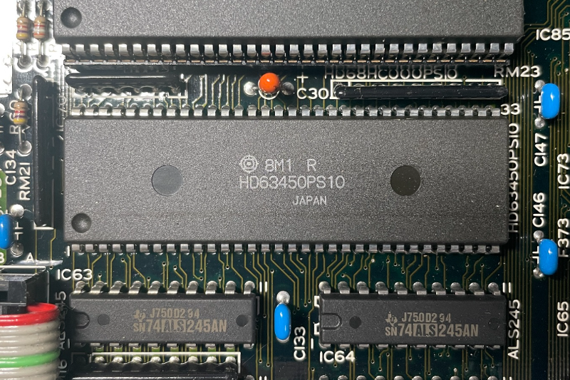

DMA "CPUを介さずデータ転送する魔法" 第2話

2024-03-13 投稿：
前回に引き続き、DMAに関する学習内容のアウトプットをさせていただきます。
よろしければ、お付き合いください。(もうフリーレン様はどこかへ行きました)
DMAC(63450)の外観と役割
X68000の中には "63450" というLSIが1個入っています。
この投稿の表紙画像中央の部品で "HD63450PS10" と書かれたコイツです。
(これはEXPERTの中にいました)
第1話の表紙画像も見て下さい。

こちらは形が異なりますが "HD63450CP10" と書いてあるコイツも同じものです。
(これはCompactXVIの中にいました)
これら "63450" は、DMAC(でぃーまっく) "ダイレクト・メモリ・アクセス・コントローラ" と呼ばれるモノです。
彼らは、DMA(でぃーえむえー)転送をコントロールするハードウェア(LSI)として生まれてきました。
色々なメーカーが、色々な名前の、色々と性能の違うDMACを作っていたりしますが、X68000に乗っているDMACは全て63450です。
DMA転送とは、CPUを介さず"ダイレクト"に"メモリ"に"アクセス"してデータ転送を行う事をいいます。
データのコピーを専用のハードウェアに丸投げできる訳ですね。
なお、"X68000 Z"には、写真のような物体は入っておらず、ソフト的に再現(エミュレーション)されて本体に書き込まれています。
イメージは大事なので、あえて63450という物体の写真を貼ってみた次第です。
DMAC(63450)のチャンネル
1個の63450の中には4つのチャンネルがあります。
それぞれのチャンネルは、X68000上で次のように使われています。
・チャンネル#0 → フロッピーディスクの制御に接続
・チャンネル#1 → ハードディスクの制御に接続
・チャンネル#2 → 未使用(ユーザー解放)
・チャンネル#3 → ADPCMの制御に接続
X68000を創造した神の手により、既になんか色々とI/Oが接続されていますね。
63450はメモリだけでなく、実はI/Oにもアクセスできる欲張りさんだったようです。
しかし、何か特殊な事に挑まない限り、自前のプログラムがI/Oにアクセスする事は稀だと思われます。
と、いう訳で、今はI/Oへのアクセスをバッサリ切り捨てて、メモリからメモリへの転送だけ考えます。
メモリ→メモリ転送が可能なのは、"チャンネル#2"だけです。
自ずと、これから使用するチャンネルが決まりましたね。
以降はチャンネル#2に絞って話を進めます。
DMAC(63450)の操作方法
使用するチャンネルが決まったので、次はコレの操作方法について見ていきます。
63450の内部には、"レジスタ"と呼ばれる8ビットとか、16ビットとか、32ビットとかの幅の空間があります。
それぞれのレジスタには CSRだの、DCRだの、OCRだの、愛着が湧かない名前が付いています。
更に各レジスタ内の各ビットにも COCとか、REQG、DIRなど、やはり愛着が湧かない名前が付いてます。
これらビットに、DMACをどのように使いたいかの設定値を書き込んでいきます。
("読む専" のレジスタ ( Read Onry属性とかR属性とか言われる ) もありますが)
例えば、OCR(8ビット幅)というレジスタの中にあるSIZE(2ビット幅)というビットには"1回の転送サイズ"を指定します。
ここに"00"を書き込めば、1回の転送が1バイトになり、"01"で1ワード(2バイト)、"10"で1ロングワード(4バイト)、"11"は未定義なのでパルプンテです。
という具合で、この他にも色々なビットに色々な設定をしていく訳です。
ところで、63450など外部にあるLSIの各レジスタに、どうやってアクセスするのか疑問に思いますよね？
大丈夫です。X68000はアドレス空間上にメモリと他の様々なアレコレが共存する形でマウントされています。
63450の各レジスタにもアドレスが割り当てられており、メモリ(変数)にアクセスするのと全く同じ感覚でアクセスできます。
ちなみに、MPU(MC68000)の内部にもレジスタ(D0～D7,A0～A7,PC,SR)がいますが、今はコイツら無関係です。
これ以降レジスタと言ったら、63450の内部にあるレジスタの事を言っています。
各レジスタの詳細は、また後ほどに見ていく事にします。
次の項からは、設定項目を一つ一つ見ていき、設定の指針を決めていきましょう。
デュアルかシングルか
63450によるDMAのデータの流し方について、以下の2つのどちらかに決める必要があります。
① デュアルアドレスモード
転送元と転送先の2つのアドレスを指定します。
② シングルアドレスモード
アドレス指定は1つだけで、もう一方はACK信号(後述)の線が物理的に接続されたI/Oとなります。
デュアルアドレスモードより転送速度が速いです。
X68000では通常、"全てのチャンネル"がデュアルアドレスモードで動作するように設定されています。
(チャンネル#2以外の接続先にはアドレスが割り当てられていると推測)
あと、シングルアドレスモードは仕組み的にメモリからメモリへの転送ができません。
今回はメモリ→メモリ転送しか行わない方針なので、必然的にデュアルアドレスモードを使うしかありません。
2024-02-21 追記：
Inside X68000 P.43 DTYP(デバイスタイプ)の項に以下の文言を発見。
"～X68000では基本的にシングルアドレスモードのサポートはうたっていませんから,～"
確かに、SHARP公式のX68000サービスマニュアルを見てみると、何処にもシングルアドレスモードに関する記載はありません。
X68000でDMA転送する場合は常にデュアルアドレスモード一択っぽいですね。
63450は、別にX68000のためだけに作られたLSIではないと考えると、X68000的には使えない機能を持っている事に不思議は無いと思います。
という訳で、DMACの設定値を決める際にはシングルアドレスモードに関わる設定は全て無効側に設定します。
逆にデュアルアドレスモードに関わる設定は、全て有効側に設定します。
DMAC(63450)から生えてるピン
再び、63450の写真を見ていただくと黒くて四角い石から銀色のピンがたくさん生えてますよね？
これらのピンはX68000上の色々と大事な所につながっています。
ほとんどのピンは通常気にする必要ありませんが、ほんの数本だけ知っておくべきピンがあります。
名前と役割だけ知っていれば十分で、63450のどこから生えているか(何番ピンか)などは別に知る必要がありません。
・REQ0～REQ3(DMA転送要求信号)：DMAC←外部
63450の外部から「転送してくれ」という要求を受け取るピンです。
この要求を合図にDMA転送を開始する事ができます。
各チャンネルに存在していて、チャンネル#2ではREQ2となります。
・ACK0～ACK3(応答信号)：DMAC→外部
シングルアドレスモードの場合にのみ使います。
この信号をI/Oに送り「データを出力してくれ」と合図します。
各チャンネルに存在していて、チャンネル#2ではACK2となります。
・PCL0～PCL3(汎用入力信号)：DMAC←外部
設定により色々な事に使えるピンです。
各チャンネルに存在していて、チャンネル#2ではPCL2となります。
・DONE：DMAC←→外部
DMA要求を行ったI/Oデバイスが全データ転送完了した事を教えてれくるピンです。
1つの63450上に1つしかありません。
面白いのが、DONE(どね？)以外は各チャンネル用のピンが存在している訳ですが、我らがチャンネル#2のヤツは、なんと！拡張スロットに接続されているという事です。
SCSIボードとかMIDIボードとか色々と差し込むアレですね。
さてここで、再びZの話になります。
悲しい事に(？)、Zには拡張スロットがありません。
このため、Z本体に何かとてつもない改造がされていない限りは、これらのピンを使う事はできません。
(特にACKはシングルアドレスモード用の物なので、もともと使えません)
DONEはFDDの制御に接続されていますが、今回の方針ではI/Oは触らないのでコレも使いません。
という訳で、設定値を決める際、REQ2,ACK2,PCL2.DONEなどピンの話が絡む設定は、全て未使用を前提とした設定値になります。
転送開始の合図
転送開始の合図は以下の３択です。
① 外部要求転送モード(REQが合図)
② オートリクエストモード
③ オートリクエストと外部要求転送(REQが合図)の組み合わせ
はい。②のオートリクエストモードしか選択肢ありませんね。(REQ2が使えませんので)
残念ですね～。。。拡張スロットから線を伸ばし、指でスイッチを押して転送開始してみたかったのですが(ぉ。
オートリクエストモードを使用する場合、さらに"最大速度"か"限定速度"のどちらかを選ぶ必要があります。
②-1 最大速度
転送終了までバス(データの通り道)を占有します。
大量のデータを転送すると、長時間CPUが動けなくなります。
②-2 限定速度
バスの使用率を調整しながら動作します。
最大速度より遅いですが、CPUを動作させながら転送できます。
正直、これに関しては、どちらを選ぶべきなのか判断が付きませんでした。
DMAを使う状況によっても変わるのかも知れません。
とりあえず"最大速度"を選びます。
理由は、Inside X68000に掲載されているDMAに関するサンプルコードは全て"最大速度"に設定されているからです。
とりあえず最大速度の設定をして、使っていく内に何か問題が発生した場合は調整します。
オートリクエストモードが具体的にどのような感じか一度、見てみましょう。
第1話のコードを見て下さい。 DMAC2CH_CCR |= 0x80; と書かれたところがありますね。
CCRは8ビットの幅です。一番右を0ビット目として数え始め、一番左の7ビット目に1が書かれた事になりますね。
このCCRのビット7が実はSTR(スタートオペレーション)という名前を持ってまして、オートリクエストモードではコレが1になる事が転送開始の合図となります。
という訳で、設定値を決める際に外部要求転送モードに関わる設定は全て無効側に設定する事になります。
逆にオートリクエストモード(最大速度)に関わる設定は全て有効側に設定する事になります。
デバイスポートサイズ
接続先が8ビットポートなのか、16ビットポートなのかで設定値が変わります。
X68000ではFD,HD,ADPCMは全て8ビットポート、メモリは16ビットポートです。
今回はチャンネル#2でメモリ→メモリ転送しかしないので通常16ビットポートに設定します。
しかし、256色や16色モードのグラフィック画面など上位ビットが無意味なときは、8ビットポートに設定するのもアリです。
関数化する際に16ビットポート固定でも良いですが、お好みで引数により設定できるようにしても良いですね。
転送ブロック数
1ブロックの転送か、複数ブロックの転送かを選んで設定する必要があります。
書籍とか資料見てると、まず「"ブロック"って何ぞや？？」ってなる訳ですが、弄っている内に理解できました。
1ブロックは、「ある先頭アドレスから連続してアドレスがつながっている1つの塊」です。
要は"配列"の状態ですね。
C言語で言うと、例えば以下のように定義したとして。。。
unsigned char hoge[10];
unsigned char fuga[10];
unsigned char piyo[10];
ここで、hogeだけを転送した場合は、1ブロックの転送になります。
hogeとpiyoを転送した場合は、2ブロック(複数ブロック)の転送になります。
ん？hogeとfugaを転送したい場合は？って思われるかもですね。
本題から反れますが、C言語的にこの書き方だとhoge[9]とfuga[0]のアドレスが連続してそうで、例として適切じゃないかなーと思いまして(環境依存で連続しない事もあるかも？)。
さて本題に戻りまして、今回は1ブロックの転送のみ扱う事にします。
理由は、現状で僕が複数ブロック転送したい状況が無いからです。
また気が向いたら、そのうち複数ブロック転送に関する投稿をするかもです。
転送サイズと転送回数
第1話のコードを見て下さい。
この例ではunsigned char型の配列を転送しているので転送サイズは8ビットにしています。
これが、例えばunsigned short型の配列の場合は転送サイズを16ビットに設定する訳ですね。
転送元アドレスと転送先アドレスを格納しているMARとDARのアドレスを定義している#define文を見て下さい。
マクロ側をvoid**型にキャストしていますね。
これは、この先に関数の引数になったとき、何型アドレスでも入るようにするための前兆ですね。
ハードウェアとして生まれたDMAC側からすれば、C言語が思い描いた"型"という概念は理解できないはずです。
そんな彼に転送サイズとして指示を出してあげましょう。
転送回数は、前回に弄っていますし、説明不要ですね。(たぶん)
今回、DMACに対する設定値は、転送サイズも転送回数も関数化した上で引数にするのが良さそうですね。
スーパーバイザ
X68000におけるメモリ空間へのアクセスは、ユーザーモードとスーパーバイザモードの2種類があります。
通常はユーザーモードになっており、一部のメモリ空間にはアクセスできないよう制限がかかっています。
要は安全装置なのですが、不自由な時もあるので時としてスーパーバイザモードにしてやる訳です。
第1話のコードを見て下さい。main()が始まってすぐに int ssp = B_SUPER(0); とありますね。これでスーパーバイザモードに切り替わりました。
そしてmain()の最後で B_SUPER(ssp); としていますね。これでユーザーモードに戻りました。
何でこんな事しているのかと言うと、DMACのレジスタも保護されていて、ユーザーモードのまま触るとバスエラーになってしまうからです。
自前のプログラムからのアクセスでは、B_SUPER()を呼ぶ訳ですが、"DMACが" 保護された領域に触る事も多そうですよね。
大丈夫です、DMACにもユーザーモードか、スーパーバイザモードかを設定する場所があります。
と言う訳で、この先DMA転送でVRAMとか触る事が多そうですし設定はスーパーバイザモードで固定にします。
今回決めた設定方針のまとめ
・チャンネル#2を使用
・メモリ→メモリ転送のみ行う
・デュアルアドレスモード
・ピンは一切使わない
・オートリクエストモード(最大速度)
・デバイスポートサイズは16ビットポート(お好みで引数化)
・1ブロックの転送のみ行う
・転送サイズと転送回数は引数にする
・スーパーバイザモード
次回予告
次回は、各レジスタと各ビットの詳細を確認していきます。
今回決めた方針に基づき、各レジスタへの具体的な設定値を決めていきましょう。
Link
・第1話 はこちら
・第2話 はこちら
・第3話 はこちら ← NEXT
・第4話 はこちら
・第5話 はこちら
Archive Note
こちらは X68000 Z コミュニティサイト(Z-CLUB) 過去投稿を修正加筆したものです。
基本的に当時の状況に基づいた内容になっています。
元投稿：https://dev.zuiki.com/project-z/community/post/detail/953
[EOF]